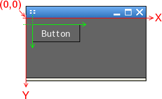

SGUI
Using the SGUI library
The widget coordinate system
The coordinate system used by widgets has its origin in the upper left corner,
with increasing X coordiantes going to the right and increasing Y coordinates
going downwards. The image below tries to illustrate this.
In the image, you can see a button, placed inside a
window. The button has been placed at coordinates (10,10), what means that it
is 10 pixels away from the left border of the window drawing area and 10
pixels from the top border of the window drawing area.

The button widget itself, however, has a local coordinate system that
starts at the upper left hand corner of the widget (Indicated by the
green coordinate axes alligned to the button borders). If, for instance, the
window detects a mouse move in the button area, the internal event sent to
the button will use widget local coordinates, i.e. the mouse position
is specified relative to the upper left hand corner of the widget.
Every widget has a bounding box; a rectangular area with its sides parallel to
the coordinate axes and guaranteed to contain the maximum outlines of the
entire widget. To represent such rectangles, SGUI internally uses the
sgui_rect data structure that offers functions to check if, for
instance, a point lies within the box or if two boxes overlap each other
(and get the intersecting area if they do).
Altough in this scenario, none of this appears to be of interesst for someone
not implementing widgets. It is however very important when aranging widgets
hirarchically what any GUI program beyond "calculate the area of a sphere"
will most likely make use of.
The widget hirarchy
The left hand side of the image above presents a fragment of a screen shot of
the SGUI demo program.
What can be seen in the image is how widgets are aranged in a hirarchy. The
hirarchy is shown as a tree in the right hand side of the image.
There is a root widget that all widgets that are added to the window are
attached to (i.e. the root widget is their parent and all other widgets
attached to the window are the children of the root widget). In this
example, the tab widget is a child of the root widget.
Since the point of a tab widget is to attach widgets to it, there are widgets
attached to the tab as children of the tab widget. In this example, the
static image widget is a child of the tab widget. And for the fun of it, a
button widget has been added as a child of the static image widget.
Adding children to an existing widget is quite easy. To make any widget a
child of any other arbitrary widget, simply use the
sgui_widget_add_child function. To remove it, use the
sgui_widget_remove_from_parent function.
Some special container widgets like the tab widget have specialized functions
for adding widgets since they have to do more complicated mechanics inside
(the tab group widget, for instance, must keep the widgets seperated by tabs
that it does not expose to the outside).
There are three important and helpfull things to keep in mind about the
behaviour of child widgets:
- Child widgets are positioned relative to their parent widget (i.e. in
the parents local coordinate system).
- If a widget is flaged invisible (to disable drawing), none of it's
children are drawn either (and none of their children and so on).
- A child widget is only visible inside its parents bounding box.
Let's get some examples. In the picture above, the button is at position
(10,10), but since the button is a child of the static image widget, (10,10)
means 10 pixels away from the left border of the image and 10 pixels
from the top of the image. If the image would move, the button would
stay at the same position inside the image. If the image would be turned
invisible, the button would no longer be drawn either. If the entire tab was
turned invisible, neither the image nor the button would be drawn anymore
(that's actually what the tab group widget does internally). If the button
was positioned so far at the right that half of it would stick out over the
image, it would be clipped and only the part inside the image would be
visible.
Previous
Back to index
Next
{kind=link}